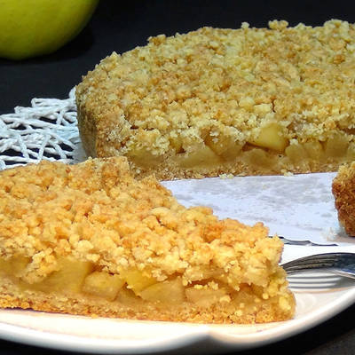
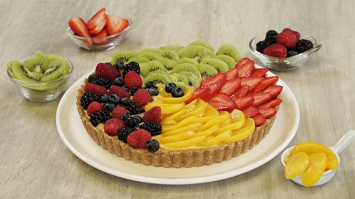
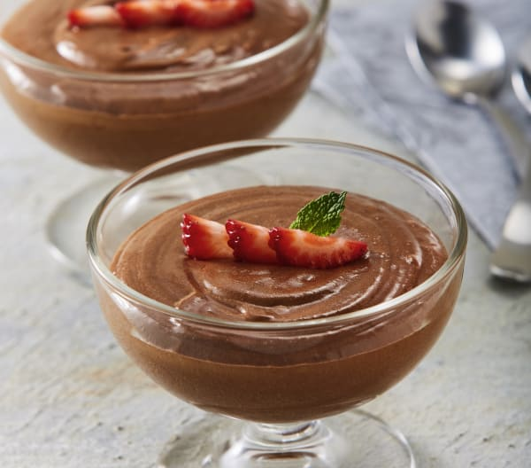

Postres Caseros
En esta seccion encontraras diferentes tipos de postre para preparar en tu casa, sencillos y rapidos para disfrutar a cualquier hora.

Crumble de manzana
Precalienta el horno a 180°C. En un tazón grande, mezcla las rodajas de manzana con el azúcar y la canela. Coloca la mezcla en un molde para hornear. En otro tazón, combina la harina, el azúcar moreno y los copos de avena. Agrega la mantequilla y trabaja la mezcla con los dedos hasta obtener una textura arenosa. Espolvorea la mezcla de cobertura sobre las manzanas en el molde. Hornea durante unos 30-40 minutos o hasta que la parte superior esté dorada y las manzanas estén tiernas. Sirve caliente con helado de vainilla.
- 4-5 manzanas, peladas y cortadas en rodajas finas
- 50g de azúcar
- 1 cucharadita de canela
- 100g de harina de trigo
- 50g de azúcar moreno
- 50g de mantequilla fría, cortada en cubos
- 50g de copos de avena
Tarta de frutas frescas
Extiende la masa quebrada en un molde para tarta y pincha el fondo con un tenedor. Coloca las rodajas de fruta sobre la masa en un patrón decorativo. Calienta la mermelada en una cacerola pequeña hasta que esté líquida, luego cepilla sobre las frutas como glaseado. Refrigera la tarta durante al menos 30 minutos antes de servir.
- 1 lámina de masa quebrada o masa para tarta, pre-cocida
- Frutas frescas variadas, cortadas en rodajas o trozos
- 3 cucharadas de mermelada de albaricoque o melocotón
Tiramisú
En un tazón grande, bate las yemas de huevo con el azúcar hasta que estén espumosas y de color claro. Agrega el queso mascarpone y mezcla hasta que esté suave. En otro tazón, bate las claras de huevo a punto de nieve. Incorpora suavemente las claras de huevo batidas a la mezcla de queso mascarpone. En un plato hondo, mezcla el café espresso con el licor de café (si lo estás usando). Sumerge brevemente los bizcochos de soletilla en la mezcla de café y licor y colócalos en el fondo de un plato o molde para servir. Cubre los bizcochos con una capa de la mezcla de mascarpone. Repite las capas de bizcochos y mascarpone hasta que se acaben los ingredientes, terminando con una capa de mascarpone. Refrigera durante al menos 4 horas, o toda la noche, para que se asiente. Antes de servir, espolvorea generosamente con cacao en polvo.
- 250g de queso mascarpone
- 3 huevos, separadas las claras de las yemas
- 100g de azúcar
- 1 taza de café espresso fuerte, enfriado
- 2 cucharadas de licor de café
- Bizcochos de soletilla o ladyfingers
- Cacao en polvo para espolvorear
Mousse de chocolate
Derrite el chocolate en un tazón sobre un cazo con agua caliente (baño María). Deja enfriar. En un tazón grande, bate las yemas de huevo con el azúcar hasta que estén espumosas y de color claro. Agrega el chocolate derretido a las yemas y mezcla hasta que esté suave. En otro tazón, bate las claras de huevo a punto de nieve. En un tercer tazón, bate la nata hasta que forme picos suaves. Incorpora suavemente las claras de huevo batidas a la mezcla de chocolate. Luego, incorpora la nata montada con movimientos envolventes hasta que esté bien combinado. Vierte la mezcla en copas individuales y refrigera durante al menos 4 horas, o hasta que esté firme. Decora con ralladura de chocolate antes de servir, si lo deseas.
- 200g de chocolate negro, troceado
- 4 huevos, separadas las claras de las yemas
- 50g de azúcar
- 200ml de nata para montar (crema para batir), bien fría